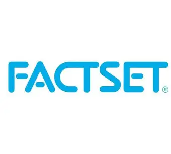

A boutique advisory practice intentionally built without institutional conflicts — structured to serve families, not banks.
Founder & Principal
Gaylord Perruchon is the Principal of IM Wealth Select®. Based in Geneva, he is a CAIA Charterholder with over 20 years of experience across institutional asset management. His experience includes reviewing how portfolios are constructed, measuring the drivers of investment results, assessing costs and risk, and supporting complex investment and onboarding decisions — disciplines he now brings directly to private wealth through IM Wealth Select®.
He helps individuals and families select, assess and monitor private banks, wealth managers and specialist investment partners with greater structure, independence and transparency.
The research, analytics and manager-selection disciplines used by institutional investors — adapted to individual and family mandates.
Morningstar Direct
Global Fund & Manager Research
Used to screen, compare and select specialist managers and funds worldwide for UHNW and institutional-style mandates — beyond a single private bank's fund shelf.
MySmartRFP
A fully digital online tendering platform
A state-of-the-art RFP platform used by leading European institutional investors. It structures bank and manager selection through standardised questions, comparable responses and a clear audit trail.

FactSet
Risk and Performance Attribution
Used to recalculate wealth-manager performance, identify return drivers and assess the contribution of asset allocation, manager selection, securities and currencies. It powers our dedicated reporting.
Secure Client Portal
Confidential document sharing
A secure environment for financial documents, mandate agreements, reporting and selection materials — keeping the advisory process organised and confidential.
We are not owned by, affiliated with, or compensated by any bank, insurance group or investment manager. Our only financial relationship is with you.
Our engagement letters specify every cost before we begin. No success fees. No hidden charges. No incentive to recommend one institution over another.
Gaylord Perruchon handles every mandate personally. Your relationship is never delegated to an associate. You call the person who does the work.